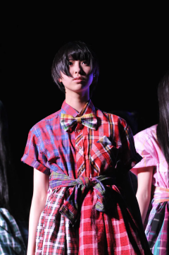
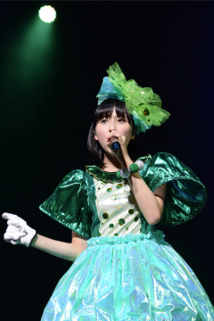

神奈川縣
神奈川縣
西元1995年6月4日出生 （歲）
A型
 雙子座
雙子座
 亥豬
亥豬
2005年與百田夏菜子同日加入星塵傳播
2008年5月17日桃色幸運草誕生，與百田夏菜子一起加入
百田夏菜子的媽媽設計桃色幸運草吉祥物【ももたん】，名稱由多數決玉井詩織命名當選
2009年09月20日【桃色幸運草 CHAMPION CARNIVAL AKBA 5DAYS（ももいろクローバー CHAMPION CARNIVAL AKBA 5DAYS）】決定了永遠的代表色
2009年【AKBA桃草大型運動鑑測對抗賽 ～鄰里最強～（AKBAももクロ対抗大運動測定会 ～そして路地裏へ～）】與佐佐木彩夏和有安杏果倒數三人組成【運動音痴組（うんちっちーず）】
2010年於【福井．鯖江市】宣傳眼鏡工藝，後續享用鱒魚壽司的事件成為與高城蕾妮、有安杏果【鱒魚壽司來三份（マス寿司三人前）】團隊名稱由來，2012年【桃草春季幹大事 2012 橫濱體育館 怎麼會有2DAYS（ももクロ春の一大事 2012 横浜アリーナ まさかの2DAYS）】以【亞歷山大．喬安（アレキサンダー．ジョアンヌ）】登場
2010年【主流Tour 2010 春季最強錦標戰 ～約二十八回合炎之對抗～（メジャーツアー 2010 春の最強タッグ決定戦 ～炎の約28番勝負～）】開始與佐佐木彩夏組成【兔兔學姐學妹（うさぎ先輩後輩）】
2010年會員限定演唱【BUDOUKAN旅行團（BUDOUKANツアー）】與百田夏菜子、佐佐木彩夏、早見朱莉組成【桃色AGE（ももいレージ）】演唱
2011年3月中學畢業
2011年【SUMMER DIVE 2011 ～安安極樂門～（サマーダイブ 2011 ～極楽門からこんにちは～）】為桃色幸運草Z出道第一次短髮登場，影響往後有一段時間常以短髮登場
2011年由日本文化廳舉辦【文化庁メディア芸術祭 ドルトムント展 2011】遠征【德國．多特蒙德．Borussia Dortmund】
2012年於【岩手．花巻市文化会館】舉辦【第54回 わんこそば全日本大会】由玉井詩織負責出賽蕎麥麵比賽，紀錄5分鐘62碗獲得同組八人中第七名
2012年於【東京．六本木ヒルズ】參與【夢見るMyマイメロディ展】活動，設計專屬的【マイメロディ】
2012年【桃草春季幹大事 2012 橫濱體育館 怎麼會有2DAYS（ももクロ春の一大事 2012 横浜アリーナ まさかの2DAYS）】與百田夏菜子組成【百田玉井（ももたまい）】
2012年由馬來西亞青年及體育部舉辦【National Youth Day Celebration（HARI BELIA NEGARA 2012）】遠征【馬來西亞．布城】，並與馬來西亞首相【Najib Razak】握手與交流
2012年團體擔任【長崎クローバー大使】
因2012年9月【TAKARA TOMY】玩具【Furby】廣告記者會睡過頭與【日本テレビ「悪夢ちゃん」】主題曲【再會吧、那些愛憐的悲傷（サラバ、愛しき悲しみたちよ）】記者會遲到，於10月節目【日本テレビ「桃色幸運草Z緊急特別節目！桃草想在日本電視台搞事！？SP（ももいろクローバーZ緊急特番！ももクロが日テレで何かやらかすらしいぞ！？SP）」】以剃眉妝登場
2012年團體【第25回 2012 小学館DIMEトレンド大賞】中的【話題の人物賞】受獎
2012年【テレビ朝日「MUSIC STATION」】節目當日與百田夏菜子、高城蕾妮突然宣告組成【三國同盟（三国同盟）】
2013年團體【第13回 ビートたけしのエンタテインメント賞】中的【日本芸能大賞】受獎
2013年於【東京．日本橋三越本店】參與【第18回 「NHKハート展」】活動，以愛心主題的畫作【真ん中】參加活動
2013年【Ustream「Ustream大賞受獎紀念 24小時我就不客氣啦TV（Ustream大賞受賞記念 24時間いただきますっTV）」】演唱活動【第一次換色挑戰】：【紅】
2013年於【千葉．袖ケ浦海浜公園】舉辦【氣志團万博 2013 ～房総爆音梁山泊～】，【森山直太朗】被【千年殺】攻擊
2013年團體獲得【MTV Japan】舉辦的【2013 MTV Europe Music Awards】中的【Best Japanese Act】
2013年10月【テレビ埼玉「HOT WAVE」】登場，節目特別將電視台【テレ玉】變成【テレ玉井】
2013年【テレビ朝日「MUSIC STATION SUPER LIVE 2013」】節目結尾不明顯的【換色番外篇】：【紅】
2014年【個推曼哈頓♡ ～我的老天鵝～（おしいろマンハッタン♡ ～なんてこったパンナコッタ～）】演唱活動【第二次換色挑戰】：【綠】
2014年3月高校畢業
2014年團體擔任國際巨星【Lady Gaga】暖場演唱【LADY GAGA'S artRAVE：the ARTPOP ball】，同時特別全身塗滿金粉登場
2014年接受來自桃草武士【田中将大】的ALS冰桶挑戰，與高城蕾妮、有安杏果成為執行成員之一
2014年【TBS「日立 世界ふしぎ発見！」】節目完美全對獲得【パーフェクト賞】
2014年【フジテレビ「FNS歌謡祭」】與【（THE ALFEE）高見沢俊彦】合作曲目【My Dear Fellow】時，並且舞台上與百田夏菜子合作打棒球擊飛至觀眾席桃草武士【田中将大】手上
2007年參與【矢井田瞳】單曲【I Love You の形】MV演出
2008年與當時成員百田夏菜子與高城蕾妮，以及早見朱莉一起參與團體【バーボンズ】單曲 【autumn】YT 【雪国】YT MV演出
2009年與當時成員百田夏菜子與高城蕾妮，以及早見朱莉一起參與團體【バーボンズ】單曲 【絆】YT MV演出
2010年與佐佐木彩夏擔任書籍【Chu→Boh vol.38】封面拍攝
2010年與佐佐木彩夏、有安杏果擔任書籍【オタポケ 10月号】封面拍攝
2010年團體擔任書籍【HMV店頭誌】【the music & movie master 215】【スーパーエンタメ新聞アニカンR Vol.80】【ネクストブレイクアイドル No.1】封面拍攝
2010年團體擔任書籍【週刊少年サンデー No.49】封面拍攝之一
2010年團體擔任書籍【B.L.T. U-17 Vol.16】封面拍攝版本之一
2011年團體擔任書籍【VOICHA！Vol.13】【スーパーエンタメ新聞アニカンR Vol.102】【週刊少年サンデー No.21】【スーパーエンタメ新聞アニカンR Vol.125】【ミューズクリップ】封面拍攝
2011年擔任書籍【Chu→Boh vol.42】封面拍攝
2011年團體擔任書籍【TV Bros. 4月2日号】封面拍攝之一
2011年團體擔任書籍【CD Journal 8月号】【Cool-up IDOL 9月号】【サマー．アイドル7 2011 SUMMER】【スーパーエンタメ新聞アニカンR Vol.141】【楽遊 vol.22】封面拍攝
2011年團體擔任書籍【POP'nアイドル！】【bounce 334号】封面拍攝版本之一
2011年團體擔任書籍【B.L.T. U-17 Vol.20】【Top Yell 10月号】【Top Yell 1月号】【週刊ヤングジャンプ No.43】【週刊少年マガジン No.53】封面拍攝
2011年團體擔任書籍【週刊SPA！1月3．10合併号】【Quick Japan Vol.95】封面拍攝
2011年團體擔任書籍【J-POP GIRLS キュン！】【JUNON 11月号】【デジモノステーション 11月号】【CM NOW VOL.153】【DOMMUNE OFFICIAL GUIDE BOOK 2】封面拍攝之一
2012年團體擔任書籍【J-POP GIRLS キュン！vol.2】【月刊少年ライバル 4月号】【月刊少年ライバル 5月号】【HARAJUKU】【CM美少女U-19 SELECTION 100 2012】封面拍攝之一
2012年團體擔任書籍【月刊スカパー！2月号】【月刊少年ライバル 3月号】【Top Yell 3月号】【月刊HMV 3月号】【FREECELL 特別号】封面拍攝
2012年團體擔任書籍【週刊ヤングジャンプ No.15】【オリ☆スタ 3月19日号】【月刊ヤングマガジン No.4】【GIRL POP 2012 SPRING】【FREECELL 特別号 5】封面拍攝
2012年擔任書籍【月刊少年ライバル 6月号】封面拍攝之一
2012年團體擔任書籍【Top Yell 6月号】【スカパー！TVガイド 6月号】【SWIMMER Ready Go！！スイマー&チョコホリック】【日経エンタテインメント！7月号】【Quick Japan Vol.102】封面拍攝
2012年生日紀念商品：斜背包組合
2012年團體擔任書籍【MARQUEE vol.91】【ch FILES 7月号】【MUSIC MAGAZINE 7月号】【Campus Walker】【風とロック 6月号】封面拍攝
2012年團體擔任書籍【日経TRENDY 7月号】【別冊少年マガジン 8月号】【週刊少年マガジン No.33】【花とゆめ 16号】【週刊少年マガジン No.35】封面拍攝之一
2012年團體擔任書籍【週刊ヤングジャンプ No.30】封面拍攝版本之一
2012年團體擔任書籍【週刊プレイボーイ No.29】【週刊少年マガジン No.34】【ニッポン放送タイムテーブル 8．9月号】【週刊ヤングジャンプ No.36】【月刊少年ライバル 9月号】封面拍攝
2012年團體擔任【しまむら】模特兒
2012年團體擔任書籍【B.L.T. PLUS VOL.4】【Top Yell 10月号】【De☆View 11月号】【週刊ビッグコミックスピリッツ 47号】【週刊少年マガジン No.50】封面拍攝
2012年團體擔任書籍【あえるアイドル大百科】【MUSIC MAGAZINE 増刊 アイドル．ソング．クロニクル 2002-2012】【月刊少年ライバル 10月号】【グループアイドル全力応援SPECIAL】【東京かわら版 467号】封面拍攝之一
2012年與高城蕾妮擔任書籍【FREECELL 特別号 11】封面拍攝
2012年團體擔任書籍【Top Yell 12月号】【小学一年生 1月号】【月刊少年ライバル 1月号】【BREAK MAX 2月号】封面拍攝之一
2012年團體擔任書籍【Tokyo Walker 11月30日号】【Yokhama Walker 11月27日号】【Kansai Walker 11月27日号】【Tokai Walker 11月27日号】【BREAK MAX 1月号】封面拍攝
2012年團體擔任書籍【北海道 Walker 冬号】【ミューズクリップ】【週刊ヤングマガジン No.52】【日経エンタテインメント！1月号】【B.L.T. 2月号】封面拍攝
2012年擔任書籍【B.L.T.関西版 1月号】封面拍攝
2012年團體擔任書籍【週刊ビッグコミックスピリッツ 4．5合併号】【NYLON JAPAN 2月号】【月刊少年ライバル 2月号】封面拍攝
2013年團體擔任書籍【BREAK MAX 3月号】【BREAK MAX 4月号】【月刊少年ライバル 3月号】【月刊コミックゼノン 4月号】【MEN'S NON-NO 6月号】封面拍攝之一
2013年團體擔任書籍【オリ☆スタ 1月28日号】【NHKウィークリーステラ 2/8号】【あそびーくる】【bea's up 4月号】【smart 5月号】封面拍攝
2013年擔任書籍【B.L.T.関西版 5月号】【B.L.T.関西版 11月号】封面拍攝
2013年團體擔任書籍【週刊プレイボーイ No.14】【SHUTTER magazine Vol.8】【週刊ビッグコミックスピリッツ 18号】【月刊Audition 5月号】【the music & movie master 243】封面拍攝
2013年團體擔任書籍【MUSIC MAGAZINE 5月号】【週刊ヤングジャンプ No.21．22】【OMOSAN STREET 25号】【週刊プレイボーイ No.20】【S Cawaii！ 6月号】封面拍攝
2013年團體擔任書籍【Seventeen 6月号】【マーガレット No.11】【Quick Japan Vol.111】【NHKウィークリーステラ 1/3号】【JUNON 2月号】封面拍攝版本之一
2013年生日紀念商品：斜背包組合
2013年團體擔任書籍【日経エンタテインメント！8月号】【週刊ヤングマガジン No.35】【週刊少年サンデー No.35】【Soup. 12月号】【週刊ビッグコミックスピリッツ 49号】封面拍攝
2013年與佐佐木彩夏、高城蕾妮、有安杏果擔任書籍【週刊ビッグコミックスピリッツ 36．37合併号】封面拍攝
2013年團體擔任書籍【週刊ヤングマガジン No.49】【週刊SPA！11月12日号】【週刊プレイボーイ No.46】【音楽と人 12月号】【週刊少年マガジン No.49】封面拍攝
2013年團體擔任書籍【ザテレビジョン日本生命版 12/20号】【テレビ31日本生命版 1/3号】【B.L.T. 2月号】封面拍攝
2014年團體擔任書籍【日経エンタテインメント！3月号】【週刊ビッグコミックスピリッツ 18号】【週刊少年マガジン No.23】【風とロックと写真】【週刊Vetter No.189】封面拍攝
2014年擔任書籍【Graduation -高校卒業- 2014】【Quick Japan Vol.114】封面拍攝
2014年團體擔任書籍【WEEKLY WiSE No.390】【Tokyo Walker 5月2日号】【Kansai Walker 5月2日号】【福岡 Walker 5月号】【Tokai Walker 5月号】封面拍攝之一
2014年生日紀念商品：斜背包組合
2014年團體擔任書籍【エンタミクス 号外「悪夢ちゃん The 夢ovie 6年2組 夢見帳」】【月刊少年ライバル 6月号】【悪夢ちゃん 夢のつづき編】【週刊ビッグコミックスピリッツ 24号】【月刊大人ザテレビジョン 10月号】封面拍攝之一
2014年團體擔任書籍【週刊ビッグコミックスピリッツ 39号】【B.L.T. 2月号】封面拍攝
2014年團體參與【さだまさし】單曲 【君は歌うことが出来る】YT MV演出
2015年團體擔任書籍【週刊ビッグコミックスピリッツ 8号】【スカパー！TVガイドBS＋CS 2月号】【週刊SPA！2月10．17合併号】【日経エンタテインメント！3月号】【別冊FLIX Vol.2】封面拍攝
2015年團體擔任書籍【GO！GO！GUITAR 3月号】【TV LIFE 2/27号】封面拍攝之一
2015年團體擔任書籍【帷幕升起（幕が上がる）】封面拍攝版本之一
2015年團體擔任書籍【HR 3．4月号】【読売ファミリー 2月12日号】【PICT-UP 93】【キネマ旬報 No.1683】【週刊ビッグコミックスピリッツ 13号】封面拍攝
2015年與百田夏菜子、佐佐木彩夏、高城蕾妮擔任書籍【Quick Japan Vol.118】封面拍攝
【美少女戦士セーラームーン -La Reconquista-】
【帷幕升起（幕が上がる）】
【テレビ東京「ウレロ☆未完成少女」】【日本テレビ「悪夢ちゃん スペシャル」】
【テレ朝動画「桃子連續劇（ももドラ）」】【NHK「天使JUMP（天使とジャンプ）」】
【日本テレビ「悪夢ちゃん」】
【市民警察69（市民ポリス69）】【モテキ】【NINIFUNI】
【白瞳（シロメ）】【帷幕升起（幕が上がる）】
【悪夢ちゃん The 夢ovie】
【麥當勞】【山田電機】【三菱電機】【東京JOYPOLIS】【康寶】【桃屋】【LOTTE】【TAKARA TOMY】【百事可樂】【FamilyMart】【萬代南夢宮娛樂】
【かよえ！チュー学】【猛烈宇宙海賊】【めざましテレビ 紙兎ロペ】
【テレビ岩手「ねだらX」】【岩手めんこいテレビ「BEATNIKS」「はちきゅん」「mitスーパーニュース」】【フジテレビ動画コンテンツ「つか金フライデーX」】【名古屋テレビ「バグルー！！」「CONTACT CAFE C」「ドデスカ！」】【東北放送「シネマどきっ」「ウォッチン！みやぎ」】
【日本テレビ「おもいッきりDON！」「スッキリ」「PON！」「ズームイン！！サタデー」「アイドルちん」「ハッピーMusic」「しゃべくり007」「宝探しアドベンチャー 謎解きバトルTORE！」「世界まる見え！テレビ特捜部」「シューイチ」「人生が変わる1分間の深イイ話」「メレンゲの気持ち」】
【日本テレビ「ロンブー&チュートの芸能人ヒットソングで爆笑ショーバトル！」「スター☆ドラフト会議」「ZIP！」「天才！志村どうぶつ園」「おしゃれイズム」「Music Lovers」「AKBINGO！」「1億人の大質問！？笑ってコラえて！」「月曜よる9時はショーバト」「news every.」「快脳！マジかるハテナ」】
【日本テレビ「さんま&所の大河バラエティ！超近現代史！人間は相変わらずアホか！？」「1番ソングSHOW」「news zero」「東京暇人」「ミュージックドラゴン」「Ozzfest Japan 2013 日本首次登場！桃色幸運草Z緊急參戰！！（オズフェスジャパン 2013 日本初上陸！ももいろクローバーZ緊急参戦！！）」】
【日本テレビ「超直前！日本一テレビ ～歌唱王．ワラチャン．リアルロボットバトル．頭脳王～」「Oha！4」「サンバリュ」「うわっ！ダマされた大賞」「笑神様は突然に…」「キユーピー3分クッキング」「ヒルナンデス！」「元日は、TOKIO × 嵐」「誰だって波瀾爆笑」「真相報道バンキシャ！」】
【日本テレビ「高校生クイズがついに開幕！地区大会を突破しアメリカを目指せSP」「第34回 全国高等学校クイズ選手権」「リアルロボットバトル日本一決定戦！本番まで待てない見所SP」「ロボット日本一決定戦！リアルロボットバトルナビ」】
【J:COM「U.K.のMUSIC JAPANリクエスト」】【CBCテレビ「来る来るミラクル」「花咲かタイムズ」】【スカパー！AT-X「Club AT-X だぶるあ～る」】【全国音楽情報TV番組「MUSIC B.B.」】【仙台放送「あらあらかしこ」】【MUSIC ON！TV「Artist File」「サキドリ！」】【南日本放送「てゲてゲ」「ズバッと！鹿児島」】
【フジテレビ「なべあちっ！」「めざましテレビ」「ミューサタ」「魁！音楽番付 Eight」「笑っていいとも！」「HEY！HEY！HEY！」「ネプリーグ」「MUSIC FAIR」「新堂本兄弟」「はねるのとびら」「めざにゅ～」「知りたがり！」「とくダネ！」「VS嵐」「Mr.サンデー」「ノンストップ！」「ライオンのごきげんよう」】
【フジテレビ「ユメノハシラ」「志村けんのバカ殿様」「ドリフ大爆笑35周年人気スターが選んだ爆笑コント20」「めざましどようび」「FNS歌謡祭」「僕らの音楽」「ニュースJAPAN」「ハモネプリーグ」「TOKIOカケル」「プレミアの巣窟」「FNS27時間テレビ」「FNNスーパーニュース」「すぽると！」】
【フジテレビ「20周年めざましテレビ夜の大同窓会！ウラ側すべて見せます＆超豪華じゃんけん祭り」「とんねるずのみなさんのおかげでした」「FNNスピーク」「みちのくSLギャラクシー THE NEW EAST EXPRESS」「FNS 正月だよ！オールハワイナイトフジ 2015」「音楽の時間 〜MUSIC HOUR〜」「ホンマでっか！？TV」】
【スペースシャワーTV「爆裂★エレキングダム！！」「NEW CUTS」「BIG HITS！」「オールナイトニッポン45周年感謝祭 ALL LIVE NIPPON」「SPACE SHOWER MUSIC VIDEO AWARDS」「CDショップ大賞 スペシャルLIVE」「音楽ヒミツ情報機関 MI6」「JET」「2013年の主役が勢ぞろい！大人気アーティストスペシャル」】
【TBS「イチオシ！さよならシュレック！山里亮太のブサイクだって幸せになれる SP」「ライブB♪」「カミスン！」「サンデージャポン」「情報7days ニュースキャスター」「TBS24時」「はなまるマーケット」「情熱大陸」「COUNT DOWN TV」「アッコにおまかせ！」「ひみつの嵐ちゃん！」「エン活！」】
【TBS「爆報！THE フライデー vs サンデージャポン！！」「ランク王国」「音楽の日」「みのもんたの朝ズバッ！」「Nスタ」「緊急生中継！さよなら国立競技場」「日立 世界ふしぎ発見！」「あさチャン！」「はやチャン！」「A-Studio」「王様のブランチ」】
【テレビ東京「ピラメキーノ」「ゴッドタン」「ポケモンスマッシュ！」「祝15周年！ポケモン映画名シーン超ランキングスペシャル！！」「JAPAN COUNTDOWN」「Crossroad」】【Ustream「TAMASHII NATION 2011 前夜祭スペシャル放送」「Ustream大賞」】
【ニコニコ生放送「電波研究社 ～アニメ．ゲーム．アニソン～」「ミュージックボンバー」「Animelo Summer Live 2011 -rainbow- ダイジェスト」「劇団ひとり、バカリズム、東京03と一緒に『ウレロ☆未完成少女』最終回を見よう！」「セーラームーン20周年記念イベント」】
【フジテレビNEXT「氣志團DEBUT 10th Anniversary 極東ROCK'N'ROLL HIGH SCHOOLドキュメント」「氣志團万博 2012 スペシャル番組」「綾小路翔の六本木バナナボーイズ」】【九州朝日放送「ドォーモ」「アサデス。」】【GAORA「全日本プロレススペシャル」】【BS朝日「コサキンDEラジオ！」「J-POPマンデー」】
【テレビ朝日「FUTURE TRACKS→R」「さきっちょ☆」「見逃しチャンネル」「中居正広の怪しい噂の集まる図書館」「やじうまテレビ！」「お願い！ランキング」「今すぐ観たい！テレ朝動画アイドル SP」「おかずのクッキング」「MUSIC STATION」「ミニステ」「徹子の部屋」「ブラマヨとゆかいな仲間たちアツアツっ！」】
【テレビ朝日「夏目と右腕」「ワールドプロレスリング」「モーニングバード！」「グッド！モーニング」「題名のない音楽会」「EXシアター特番」「ゴーちゃん。GIRL'S TV」「CSテレ朝ナビ！！」「ナニコレ珍百景」「ポータル ANNニュース&スポーツ」】
【関西テレビ「ミュージャック」「さんまのまんま」「臨時発売！さんまのまんま大全集」「ピーチケ＋」「めざせ甲子園！つかたこレインボーロード」「まりえのMOVIE！GO！」】
【NHK「MUSIC JAPAN」「J-MELO」「大科学実験」「あほやねん！すきやねん！」「スタジオパークからこんにちは」「もうすぐ9時プレマップ」「ミニ番組」「秋ナビ」「地球イチバン」「紅白歌合戦 初出場歌手PR」「NHK紅白歌合戦」「しあわせニュース」「NHK NEWS おはよう日本」「NHK福祉大相撲」「目撃！日本列島」】
【NHK「みんなをつなぐ魔法のメロディー」「土曜スタジオパーク」「コレ見て！ムービー」「毎日PR！紅白」「今夜も生でさだまさし」「NHKのど自慢」「国民総参加クイズSHOW！QB47」】
【長崎放送「報道センターNBC」】【CS寄席チャンネル「寄席ちゃんLive」】【NHK Eテレ「大！天才てれびくん」「シャキーン！」】【北海道放送「札幌美少女図鑑」「スープカレー 0辛」「グッチーの今日ドキッ！」「もくよう☆アプリ」】【高知さんさんテレビ「サタ★マガ」】【NHKワンセグ2「ワンセグ☆ふぁんみ」】
【BS11「秋葉系アイドルチャンネル」】【岐阜放送「NEWS 5 PLUS」】【東海テレビ「バナナマンのブログ刑事」「まるナツ 美浜海遊祭LIVE ～MUSIC WAVE 2011～」】【テレビ埼玉「THE BEAT TIME」「玉ニュータウン」「ごごたま」「HOT WAVE」「V-Clips」】【WOWOW「戦慄のメタル．オールナイト」】
【札幌テレビ「どさんこワイド179」「どさんこワイド朝」「どさんこワイドひる」「シアターS」】【読売テレビ「たかじんのそこまで言って委員会」「朝生ワイド す．またん！」】【毎日放送「ちちんぷいぷい」「せやねん！」「MUSIC EDGE + OsakaStyle」「痛快！明石家電視台」】【BS-TBS「サキドリ！」】
【朝日放送「おはよう朝日です」「パネルクイズ アタック25」「おはようコールABC」】【CS「MTV」】【NHK沖縄「NEWSおきなわ610」「りっかりっか沖縄」】【スペースシャワーTV Plus「ヘビロテ！」「ザ．プロデューサーズ -前山田健一-」】【NHK BSプレミアム「J-MELO」「音楽熱帯夜」】【熊本朝日放送「くまパワ」】
【SMOOCH.TV「Pretty Women！in ebis」】【CSテレ朝チャンネル「ジャガイモン！」「笑う新選組」】【TOKYO MX「U．LA．LA」「U．LA．LA@7」】【NHK甲府放送局「まるごと山梨」】【福井放送「おじゃまっテレ ワイド&ニュース」】【IBC岩手放送「ニュースエコー」「じゃじゃじゃTV」「ミッドナイトシャッフル」】
【石川テレビ「石川さん情報Live リフレッシュ」】【長野放送「土曜はこれダネッ！」】【北海道テレビ「イチオシ！モーニング」「ワクワク、はじまる。」】【テレビ高知「イブニングKOCHI」「おんがくのおじかんです」】【テレ朝動画「川上アキラの人のふんどしでひとりふんどし」】
【スカパー！「GIRLS POP NEXT」「アイドル"独断と偏見"情報局」「スカパー！アワード 2012 授賞式」「スカパー！音楽祭」】【テレビ静岡「情報ワイド てっぺん静岡」】【新潟総合テレビ「スマイルスタジアムNST」】【テレビ新潟「シネマレビュー」】【中部日本放送「IMPACT」】
【新潟放送「Nスタ新潟」】【テレビ西日本「ももち浜ストア」】【福島テレビ「サタふく」】【テレビ長崎「ヨジマル！」】【北海道文化放送「U型ライブ」】【静岡朝日テレビ「とびっきり！しずおか」】【NHK BS1「ASIAN MUSIC NETWORK」】【福岡放送「めんたいワイド」「ナイトシャッフル」】
【宮城テレビ「ちょっとブレイクタイム」】【テレビ北海道「遊びなDJサタデー」】【西日本放送「こちらハッピー探偵社」】【瀬戸内海放送「にこまるワイド」】
【サムライちゃんねる「ちょっとバタバタしてまして：シーズン2」】【NHK Eテレ「青山ワンセグ開発」】【テレビ朝日「お願い！ランキング」】【日本テレビ「ロボット日本一決定戦！リアルロボットバトル」】
【goomo「桃草心跳加速初體驗日記！（ももクロドッキドキ初体験日記！）」】【文化放送デジタルラジオ 超！A&G+「桃色幸運草的每日桃子頻道！（ももいろクローバーの毎日ももチャンネル！）」】
【テレ朝動画「桃草Chan（ももクロChan）」】【スカパー！AT-X「朝氣桃子丼～馬上開動！（すたもも丼～いただきやすっ！）」】
【スペースシャワーTV Plus「桃色幸運草Z SP（ももいろクローバーZ スペシャル）」「桃草2小時宣傳Z！SP（ももクロが2時間ジャックだZ！スペシャル）」「桃草3小時宣傳Z！SP（ももクロが3時間ジャックだZ！スペシャル）」「桃色幸運草Z 人氣排行榜（ももいろクローバーZ リクエストカウントダウン）」】
【スペースシャワーTV Plus「桃草終於4小時宣傳Z！SP（ももクロが遂に4時間ジャックだZ！スペシャル）」「桃草5小時宣傳放送前！MUSIC VIDEO SP（ももクロ5時間ジャック放送直前！ミュージックビデオスペシャル）」「桃草怎麼會有5小時宣傳Z！SP（ももクロがまさかの5時間ジャックだZ！スペシャル）」】
【テレビ朝日「桃草Chan Z！！（ももクロChanだZ！！）」「桃草Chan ～桃色幸運草Z Channel～（ももクロChan ～ももいろクローバーZ Channel～）」「桃草Chan（ももクロChan）」「増刊桃草Chan（増刊ももクロChan）」】【CS TBSチャンネル「桃草團一舉放送（ももクロ団一挙放送）」】
【スペースシャワーTV「桃色幸運草Z MUSIC VIDEO SPECIAL（ももいろクローバーZ MUSIC VIDEO SPECIAL）」「桃色幸運草Z LIVE Selection（ももいろクローバーZ ライブセレクション）」】
【スペースシャワーTV「「桃草春季幹大事 2014 國立競技場大會 ～NEVER ENDING ADVENTURE 迎向夢想彼端～」販售紀念 桃色幸運草Z 歷代LIVE History（「ももクロ春の一大事 2014 国立競技場大会 ～NEVER ENDING ADVENTURE 夢の向こうへ～」発売記念 ももいろクローバーZ 歴代ライブヒストリー）」】
【CSテレ朝チャンネル「桃草Chan副刊（別冊ももクロChan）」「桃草式實習指南 桃子實境！！（ももクロ式見学ガイド もも見！！）」「桃色幸運草Z 24小時大放送Z！！！（ももいろクローバーZ 24時間大放送だZ！！！）」「新春！！2014年 桃草SP DAY（新春！！2014年 ももクロスペシャルデー）」】
【CSテレ朝チャンネル「與桃草一同觀賞！桃色幸運草Z LIVE SP 桃草夏季犯蠢主題樂園 SUMMER DIVE 2012 ～開幕戰～ NHK音樂廳大會篇＜桃草副聲道＞（ももクロちゃんと一緒に観よう！ももいろクローバーZライブスペシャル ももクロ夏のバカ騒ぎ SUMMER DIVE 2012 ～開幕戦～ NHKホール大会編＜副音声あり＞）」】
【Ustream「Ustream大賞受獎紀念 24小時我就不客氣啦TV（Ustream大賞受賞記念 24時間いただきますっTV）」「桃草一元復始大概24時間SP「心想事成♡」（ももクロ初夢ほぼ24時間SP「一富士二タカさんはなすび♡」）」】
【フジテレビNEXT「秋季桃草祭典！！！桃草SP INTERVIEW（秋のももクロ祭り！！！ももクロスペシャルインタビュー！！！）」「加碼桃色聖誕 2013！Party in ODAIBA（もうひとつの、ももいろクリスマス 2013！Party in ODAIBA）」「坂崎幸之助的桃色民歌村NEXT（坂崎幸之助のももいろフォーク村NEXT）」】
【フジテレビNEXT「桃色聖誕 2014 埼玉超級競技場大會 延長戰 大檢討會（ももいろクリスマス 2014 さいたまスーパーアリーナ大会 延長戦 大反省会）」「鹽麴玉井詩織 × 坂崎幸之助的御台場民歌村NEXT（しおこうじ玉井詩織 × 坂崎幸之助のお台場フォーク村NEXT）」】
【NHK「Twinkle5的秘密 ～天使們下凡的軌跡～（Twinkle5のひみつ ～地上に舞い降りた天使たちの軌跡～）」「「天使JUMP」全解析 ～桃草 戲劇初挑戰～（「天使とジャンプ」のすべて ～ももクロ ドラマ初挑戦～）」】
【NHKオンデマンド「這是桃草！只有這裡能看『天使JUMP』配信預告！（ももクロの！ここでしか見られない『天使とジャンプ』配信予告メッセージ！）」】【WOWOW「桃色幸運草Z LIVE at SUMMER SONIC 2013（ももいろクローバーZ LIVE at サマソニ 2013）」】
【スカパー！「附屬小國高校桃子蝦學園 ～桃色幸運草部（小中高一貫ももえび学園 ～ももいろクローバーの部）」「加碼桃色聖誕 2013！Party in ODAIBA 直播前特別節目 桃草LIVE列傳 ～momoclo evolution～（もうひとつの、ももいろクリスマス 2013！Party in ODAIBA 生放送直前特番 ももクロライブ列伝 ～momoclo evolution～）」】
【スカパー！「「走向全國！」桃草徒步全國的帷幕升起（「行くぞ、全国！」ももクロ全国行脚の幕が上がる）」「「來了！讚岐！」桃草讚岐電影節的帷幕升起（「来たよ！さぬき！」ももクロさぬき映画祭の幕が上がる）」「傳遞桃草的努力！走向全國！127場電影院見面會（ももクロの本気届けます！行くぞ全国！127館舞台挨拶）」】
【スカパー！「出動！127場！桃草徒步全國電影院見面會最終章（行ったぞ！127館！ももクロ舞台挨拶全国行脚フィナーレ）」】
【フジテレビ「桃色恐龍Z（ももいろダイナソーZ）」「桃草的軌跡 2013 ～西武巨蛋、日産體育場、直到最新桃子聖誕～（ももクロの軌跡 2013 ～西武ドーム、日産スタジアム、最新ももクリまで～）」「充滿熱情的電影「帷幕升起」！（映画「幕が上がる」のここが熱い！）」】
【日本テレビ「桃色幸運草Z緊急特別節目！桃草想在日本電視台搞事！？SP（ももいろクローバーZ緊急特番！ももクロが日テレで何かやらかすらしいぞ！？SP）」「GW我的學生是惡夢祭典！北川景子&桃草史無前例宣傳就在日本電視台SP（GWは悪夢ちゃん祭り！北川景子&ももクロが前代未聞の日テレジャックしちゃうぞSP）」】
【日本テレビ「高校生Quiz 2014 桃草 & 藝人橫跨美國炒熱氣氛SP（高校生クイズ 2014 ももクロ & 芸人と盛り上がってアメリカ横断だSP）」】
【CSフジテレビONE「「桃草春季幹大事 2014 國立競技場大會 ～NEVER ENDING ADVENTURE 迎向夢想彼端～」～桃草LIVE影片鑑賞大談國立2days～（「ももクロ春の一大事 2014 国立競技場大会 ～NEVER ENDING ADVENTURE 夢の向こうへ～」～ももクロがライブ映像を観ながら語る国立2days～）」】
【ニコニコ生放送「高校生Quiz開幕！桃草未公開片段大大大放送SP！！ ～提前全國高校Quiz祭典～（高校生クイズ開幕！ももクロ未公開映像大大大放出SP！！ ～ひと足先に全国の高校でクイズ祭り～）」】
【TBS「桃草團（ももクロ団）」】【MUSIC ON！TV「月刊 ももいろクローバーZ」】【テレビ東京「UFI的未完成TV（UFIの未完成TV）」】【関西テレビ「桃草 VS 百人喪屍 SAVE（ももクロ VS 100人のゾンビ SAVE）」「桃色鶴瓶 ～下面一位～（桃色つるべ ～お次の方どうぞ～）」】
【NHK BSプレミアム「奇蹟的合作！火力全開！KISS&桃草（奇跡のコラボ！パワー全開！KISS&ももクロ）」】【CS日本映画専門チャンネル「電影「帷幕升起」公開紀念原創節目「桃色演出論」（映画「幕が上がる」公開記念オリジナル番組「ももいろ演出論」）」】
【スカパー！「スタ☆フェス ～週末ヒロインたちの夏～」「スタ☆どん」】
【NO LIFE TV「KIRA KIRA JAPON」】
【天神FM「Park Side Cafe」「Park Side Cafe Friday」】【FREE WAVE77.7「MORNING WAVE」「PARK SIDE CAFE」】【エフエム岩手「Do you！？」「MAX WAVESCAPE」】【ラヂオもりおか「FRIDAY POWER SESSION 2ND Half」】【MBSラジオ「上泉雄一のええなぁ」「MBSうたぐみ Smile × Songs」】
【ラジオ関西「王様ラジオキッズ」「林原めぐみのHeartful Station」】【広島エフエム放送「庄司悟のリクエスト魂」】【CBCラジオ「ハイパーナイト．ナガオカ」「ごごイチ」「土曜天国ぴかラジ」】【FM NACK5「NACK ON TOWN」「The Nutty Radio Show おに魂」「夕焼けSHUTTLE」「IDOL SHOWCASE i-BAN！！」「HITS！THE TOWN」】
【TBSラジオ「週刊デジタリアン」「水曜JUNK 山里亮太の不毛な議論」「爆笑問題の日曜サンデー」「JUNKバナナマンのバナナムーンGOLD」「林原めぐみのTokyo Boogie Night」「たまむすび」】【NHKラジオ「渋マガZ」「こうせつと仲間たち」「今日はとことんラジオ祭り！春だから、出会いラジオ」「NHKのど自慢」】
【ニッポン放送「ますおかちゃんねる」「サタデーキューティナイト アイドルスタジオNo.1」「テリー伊藤 サンデーのってけラジオ」「miwaのオールナイトニッポン」「大槻ケンヂのオールナイトニッポンGOLD」「ゆずのオールナイトニッポンGOLD」「中山秀征のオールナイトニッポンGOLD」】
【ニッポン放送「松本ひでお 情報発見ココだけ！」「福山雅治のオールナイトニッポンサタデースペシャル．魂のラジオ」「ラジオ．チャリティ．ミュージックソン」「高嶋ひでたけのあさラジ！」「吉田尚記 BUZZニッポン」「松任谷由実のオールナイトニッポン」「上柳昌彦 ごごばん！」「高田文夫のラジオビバリー昼ズ」】
【ニッポン放送「ラジオパーク in 日比谷」「徳光和夫とくモリ！歌謡サタデー」「笑福亭鶴瓶 日曜日のそれ」「笑福亭鶴瓶 土曜日のあれ」「番組間」「われらラジオ世代」「吉田尚記のオールナイトニッポン」「大谷ノブ彦 キキマス！」「SHELLY GO ROUND」「オールナイトニッポンGOLD 忘れられぬミュージックスペシャル」】
【ニッポン放送「大原櫻子のオールナイトニッポンZERO」「ニッポン放送開局60周年記念 ラジオで聴いた「忘れられぬミュージック」」「ごめんね そして、ありがとう ～音楽にのせて送る2014年のメッセージ」「吉田尚記のオールナイトニッポンGOLD」】
【FM大阪「スカッシュ！」「あつまれ！MUSIC COASTER」】【HBCラジオ「彼女の流儀」「ベストテンほっかいどう」「山ちゃん美香の朝ドキッ！」「アニメロティック」】【J-WAVE「RADIPEDIA」「ROCKETMAN SHOW」「東京REMIX族」】【AIR-G'「アーティストフラッシュ」「AV Music Channel」「Superduper Radio Next Generation」】
【JFN系列「ダイノジのSCHOOL NINE」】【InterFM「YOUNG BLOOD」】【FMヨコハマ「tre-sen」】【FM富士「WESTSIDE TOKYO」】【下北FM「DJ Tomoaki's Radio Show！」】【ソラトニワ銀座「銀座 BODYSLAM BOYS」】【ラジオ日本「真夜中のハーリー&レイス」】【ぎふチャン「音番パラダイス」「月～金ラジオ2時6時」】
【東京FM「SCHOOL OF LOCK！」】【K'z Station「おしゃべりやってまーす第2放送」】【TOKYO FM「シンクロノシティ」「JA全農 COUNTDOWN JAPAN」】【FM FUJI「FEEL SO MUSE」】【YBSラジオ「Talk魂765 GO！GO！イチ」】【女川さいがいFM「おながわ☆なう」】【FM福岡「BUTCH COUNTDOWN RADIO」】【TBCラジオ「ロジャー大葉のラジオな気分」】
【ラジオ福島「おいしいラジオ」「踊れ！ライヴマニア」「手塚伸一 Sunday"卵→KING"」】【南日本放送「たんぽぽ倶楽部」「モーニングスマイル」「岩﨑弘志のTEGE2ハイスクール」】【IBC岩手放送「ワイドステーション」「冨田奈央子のアフタースクールらじお！」】【福井放送「良ーいドン！！」】
【NHK FM「栗屋敷 ～栗コーダーカルテットの密やかな愉しみ～」】【エフエム熊本「FMKパンゲア！」「ミューコミ＋プラス」】【fmいずみ「be A-live」】【エフエム山形「シネマアライヴ」】
【FM FUJI「桃草的LET'S LISTENING TIME！（ももクロちゃんのLET'S LISTENING TIME！）」】【文化放送「先行SP 桃色幸運草的桃子廣播（センパツスペシャル ももいろクローバーのももちゃんラジオ）」】【STAR digio 400ch.「週末女主角桃色幸運草Z的世界的桃草NO.1（週末ヒロインももいろクローバーZの世界のももクロNO.1）」】
【ニッポン放送「桃色幸運草的All Night Nippon Mobile（ももいろクローバーのオールナイトニッポンモバイル）」「桃色幸運草Z的All Night Nippon（ももいろクローバーZのオールナイトニッポンR）」「桃草俱樂部xoxo（ももクロくらぶxoxo）」】
【ニッポン放送「桃色幸運草Z 經紀人kwkm的All Night Nippon R（ももいろクローバーZ チーフマネージャー川上アキラのオールナイトニッポンR）」「事務所請幫推小隊的All Night Nippon R（事務所に推され隊のオールナイトニッポンR）」】
【テレビ東京「UFI的未完成電台（UFIの未完成ラジオ）」「UFI的未體驗電台（UFIの未体験ラジオ）」】
【Sho-Boh】【UTB】【UTB＋】【memew】【ピュアピュア】【B.L.T.】【BUBKA】【BOMB】【Kindai】【新潟WEEK！】【ch FILES】【週刊プレイボーイ】【Vivitto】【ヤンヤン】【週刊女性】【月刊スカパー！】【スカパー！TVガイド】【スカパー！e2TVガイド】【月刊Audition】【スコラ】【DiaDaisy】【FLASH】【週刊少年サンデー】【BIG ONE GIRLS】
【BIG ONE】【Chu→Boh】【EX大衆】【週刊SPA！】【3B junior BOOK】【De☆View】【グラビアザテレビジョン】【オタポケ】【週刊ヤングジャンプ】【ボイチャ】【週刊ヤングマガジン】【オリ☆スタ】【ミューズクリップ】【声優アニメディア】【声優グランプリ】【アニカン】【HMV店頭誌】【smart】【sweet】【上毛新聞】【WEEKLY WiSE】
【the music & movie master】【iPopステーション】【Pick-up Voice】【朝日小学生新聞】【Hana*chu→】【スーパーエンタメ新聞アニカンR】【ゲームエンタ！】【ネクストブレイクアイドル】【DIME】【TV Bros.】【リスアニ！】【月刊エンタメ】【Club iT】【日経エンタテインメント】【Newtype】【VOICHA！】【CD&DLデータ】【Popteen】
【What's In？】【Zipper】【CD Journal】【月刊HMV】【SWITCH】【GIRL POP】【Seventeen】【POP'nアイドル！】【読売新聞】【カンタン！カワイイ！造花DECO 楽屋ミラー 67 Style】【TOWER】【MUSIC MAGAZINE】【bounce】【Cool-up IDOL】【MORE】【an．an】【サマー．アイドル7】【MEN'S NON-NO】【MARQUEE】【Graduation -高校卒業-】
【Quick Japan】【楽遊】【Top Yell】【SPUR Pink】【GINZA】【J-POP GIRLS キュン！】【JUNON】【デジモノステーション】【ポポロ】【Fine】【CM NOW】【ViVi】【CanCam】【SPUR】【装苑】【j-nude】【Wink up】【POTATO】【TV station】【THIS IS ME！！カルチャー界の未来を切り開く100名の女子クリエイターたち。】【りぼん】【宝島】
【TV LIFE】【Myojo】【ウレぴあ】【週刊少年マガジン】【ROCKIN'ON JAPAN】【ダ．ヴィンチ】【このマンガがすごい！ 2012】【DOMMUNE OFFICIAL GUIDE BOOK 2】【NYLON JAPAN】【ピチレモン】【ミニスカ&モーレツ宇宙海賊公式ファンブック】【mina】【信濃毎日新聞】【月刊少年ライバル】【音楽と人】【VoCE】【STREET JACK】【Numero TOKYO】
【月刊ヤングマガジン】【映画秘宝EX激動！アイドル10年史】【極東ロックンロール．ハイスクール 氣志團 VS】【HARAJUKU】【別冊サイゾー × PLANETS】【静岡新聞】【Little Twin Stars Fan】【FREECELL】【nicola】【CM美少女U-19 SELECTION 100 2012】【FRIDAY】【TVfan】【Campus Walker】【風とロック】【GIRL'S STAR】【日経TRENDY】【HR】
【GO！GO！GUITAR】【ニッポン放送タイムテーブル】【B.L.T. U-17】【B.L.T. PLUS】【カジカジ】【Sho-Comi】【朝日新聞】【アニカンRヤンヤン！！】【あえるアイドル大百科】【小学一年生】【女性自身】【アニメディア】【AERA】【グループアイドル全力応援SPECIAL】【東京かわら版】【ケトル】【週刊ビッグコミックスピリッツ】【新潟日報】
【週刊アスキー】【月刊Piano】【花とゆめ】【MOBSPROOF】【週刊新潮】【ザテレビジョン】【Tokyo Walker】【Yokhama Walker】【Kansai Walker】【Tokai Walker】【福岡 Walker】【TVガイド】【BREAK MAX】【北海道 Walker】【TVnavi】【月刊ザテレビジョン】【チェキ it！】【高知新聞】【北國新聞】【NHKウィークリーステラ】【TV LIFE Premium】
【NINAGAWA WOMAN】【Clubism】【PRESIDENT】【月刊コミックゼノン】【相撲】【あそびーくる】【bea's up】【Quarterly NOTE】【岐阜新聞】【JJ】【スカパー！TVガイドBS＋CS】【スカパー！TVガイド プレミアム】【TVぴあ】【BACKSTAGE PASS】【SHUTTER magazine】【Cut】【M girl】【TSUTAYA CLUB MAGAZINE】【OMOSAN STREET】【S Cawaii！】
【GOOD ROCKS！ PHOTO BEST SELECTION】【別冊少年マガジン】【週刊プロレス】【秘密ノート】【誰も戦争を教えてくれなかった】【ちょっと盛りました。】【婦人公論】【Rolling Stone】【Soup.】【CUTiE】【月刊MdN】【テレビ31】【FLIX】【活字アイドル論】【愛媛新聞】【仕事を選ぶ 先輩が語る働く現場64】【山梨日日新聞】【エンタミクス】
【3.11とアイドル】【悪夢ちゃん 夢のつづき編】【non-no】【なかよし】【ROLa】【週刊Vetter】【pumpkin】【デジタルTVガイド】【月刊大人ザテレビジョン】【SAYONARA国立競技場56年の軌跡】【キネマ旬報】【Cinema★Cinema】【CINEMA SQUARE】【MOVIEZ】【＋act.】【BURRN！】【日本映画navi】【ダンスファン】【レコード．コレクターズ】
【帷幕升起（幕が上がる）】【東京新聞】【別冊FLIX】【読売ファミリー】【PICT-UP】【大人のロック！】【週刊少年ジャンプ】【rockin'on】
【桃子本 ～桃色幸運草公式寫真書～（もも本 ～ももいろクローバー公式ビジュアルブック～）】【STUDIO VOICE「特集☆桃色幸運草」號（STUDIO VOICE「特集☆ももいろクローバー」号）】【桃色幸運草Z 戀愛制服（ももいろクローバーZ 恋する制服）】
【Momoiro Clover Film Z 電影『帷幕升起』 桃色幸運草Z 公式寫真書（Momoiro Clover Film Z 映画『幕が上がる』 ももいろクローバーZ オフィシャル．フォトブック）】
【『桃草Chan』Presents 十回合試練對抗 週末女主角 桃色幸運草Z（『ももクロChan』Presents 試練の十番勝負 週末ヒロイン ももいろクローバーZ）】【桃草PIA（ももクロぴあ）】【『桃草Chan』Presents 桃草七回合試練對抗 2012（『ももクロChan』Presents ももクロ試練の七番勝負 2012）】
【Quick Japan Special Issue 桃色幸運草Z ～The Legend～ 2008-2013（Quick Japan Special Issue ももいろクローバーZ ～The Legend～ 2008-2013）】【桃年史（ももクロニクル）】【門扉開啟！（うーぶろん．ら．ぽるとー！）】
【桃草點滴記錄 桃色幸運草Z公式記者追蹤報導 2011～2013（ももクロ活字録 ももいろクローバーZ公式記者追っかけレポート 2011～2013）】【Quick Japan Special Issue 桃色幸運草Z ～Compass of the dream～ 2013-2014（Quick Japan Special Issue ももいろクローバーZ ～Compass of the dream～ 2013-2014）】
【桃草流 ～與5人教學相長的過程～（ももクロ流 ～5人へ伝えたこと 5人から教わったこと～）】
【桃草夏季犯蠢主題樂園 SUMMER DIVE 2012 Tour（ももクロ夏のバカ騒ぎ SUMMER DIVE 2012 Tour）】【桃色聖誕 2012 King of Live（ももいろクリスマス 2012 King of Live）】【桃草夏季犯蠢主題樂園 WORLD SUMMER DIVE 2013（ももクロ夏のバカ騒ぎ WORLD SUMMER DIVE 2013）】
【桃色聖誕 2013 美麗的極寒世界（ももいろクリスマス 2013 美しき極寒の世界）】【桃草春季幹大事 2014 國立競技場大會 ～NEVER ENDING ADVENTURE 迎向夢想彼端～（ももクロ春の一大事 2014 国立競技場大会 ～NEVER ENDING ADVENTURE 夢の向こうへ～）】
【桃草夏季犯蠢主題樂園 2014 日產體育場 ～桃神祭～（ももクロ夏のバカ騒ぎ 2014 日産スタジアム大会 ～桃神祭～）】
【桃子職業摔跤Z（ももプロZ）】
【OCN TODAY トップ】【テレビドガッチ】【MOVIE Collection】【CDJournal】【ふみコミュ！】【hotexpress】【BARKS】【billboard JAPAN】【STUDIO VOICE】【ぽこぽこ－】【ナタリー】【Yahoo！JAPAN】【朝日新聞 DIGITAL】【ORICON】【STARDUST】【ウレぴあ総研】
【FASHIONSNAP】【ガジェット通信】【シネマトゥデイ】【映画.com】
【惡魔積分】